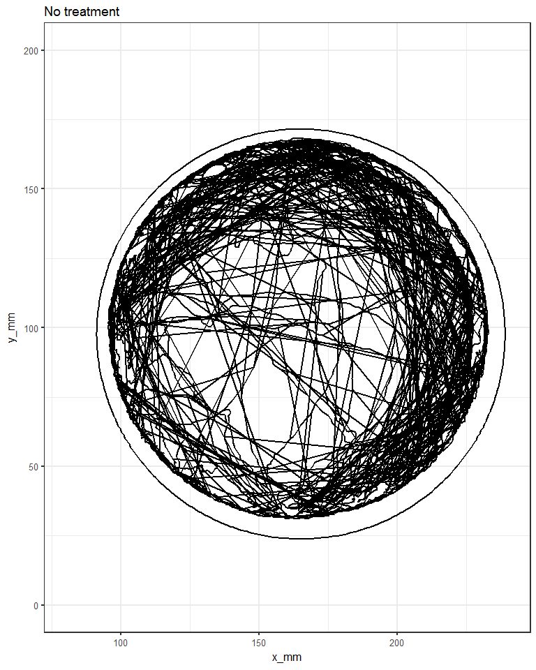
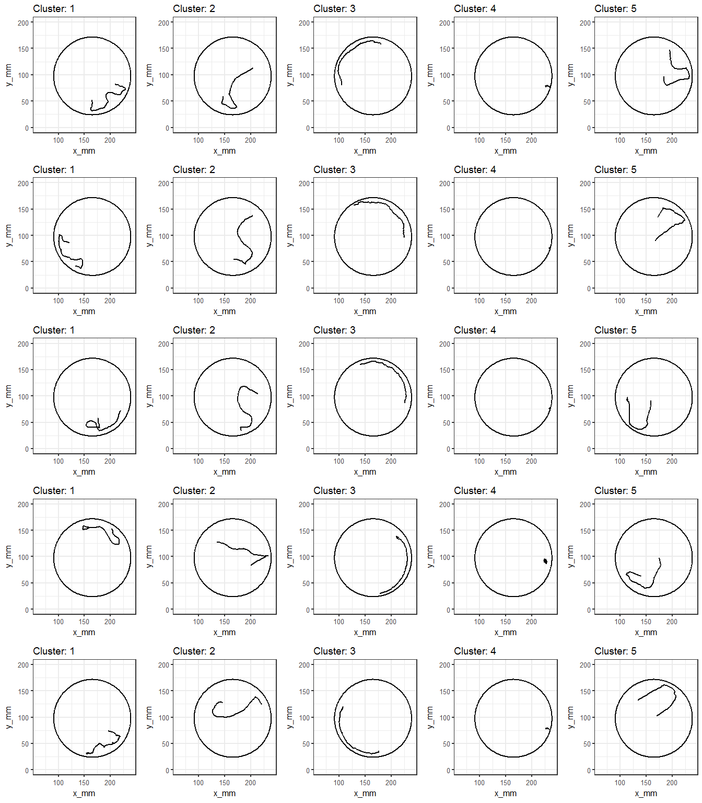
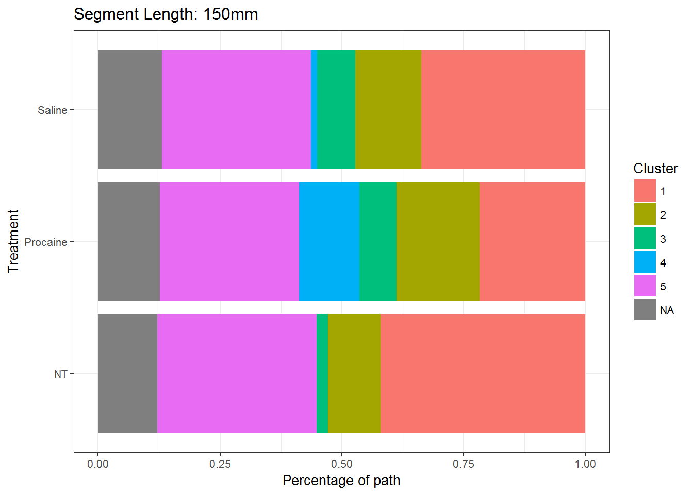

Last updated: 2018-07-25
Code version: 2e33ca2
The goal of this project was to detect common movement patterns that bees exhibited throughout an Adapted Detour Paradigm Experiment. In this experiment, a bee was placed in a circular arena in which their ability to move was restricted to x and y directions only. The circular arena prevented them from moving vertically. Lights were then switched off and on at different positions along the edge of the arena. The bee’s position was tracked for the duration of the experiment, producing a dataset of x, y coordinates at uniform time intervals. The experiments were conducted for 3 different treatment groups (1) bees given no treatment (‘NT’) (2) bees treated with saline (3) bees treated with procaine. The dataset being analysed contained the x and y coordinates of bees recorded throughout multiple experiments. Here is a plot that showing the movement of a single bee in a single experiment:

From this plot alone, it is difficult to obtain much valuable information on how the bee is behaving. We can say that the bee spent more time at the edges of the arena and that, generally, when the bee traversed the center, it did so in a straight line. Beyond that, not much more can be confidently determined. If the path of the bee is manually broken up into smaller segments and plotted we might be able to learn more, but this would be a time intensive process, and possibly even preventative.
In this project an analytical technique was applied to automate this process and discover possible categories of bee behaviour, as well as to calculate the total length of time bees spent within each category of behaviour, under different treatments.
To demonstrate this idea, the following plots demonstrate 5 possible types of behaviour that we discovered when we segmented the bee’s entire path into 150mm lengths. Each column contains a different possible behaviour with 5 different example segments:

By looking at these samples, we can now start to form hypotheses for how the bee is behaving at different points within the experiment. For example, in Cluster 3 we observe a bahviour known as thigmotaxis, where an animal wanders around the edge of the arena.
In addition to discovering common behaviours, this technique automatically classifies the bee’s entire path, a process that, if performed manually, could take hours if not days to perform. Furthermore, once the bee’s entire path has been classified, we can calculate/plot how much time the bee spends in each cluster of behaviour. This is especially useful if we want to compare how the bee’s behaviour changes as a result of different treatments:

Each horizontal bar represents a different treatment, with each colour showing the percentage of the time that the bee spent within each cluster of behaviour.
Combining this information with the cluster plots above, we can say things like Procaine increases the amount of time that bees move within a very tiny region of the arena (Cluster 4), or that Procaine reduces the amount of time spent moving within a smaller region (Cluster 1).
sessionInfo()R version 3.4.3 (2017-11-30)
Platform: x86_64-w64-mingw32/x64 (64-bit)
Running under: Windows 7 x64 (build 7601) Service Pack 1
Matrix products: default
locale:
[1] LC_COLLATE=English_United Kingdom.1252
[2] LC_CTYPE=English_United Kingdom.1252
[3] LC_MONETARY=English_United Kingdom.1252
[4] LC_NUMERIC=C
[5] LC_TIME=English_United Kingdom.1252
attached base packages:
[1] grid stats graphics grDevices utils datasets methods
[8] base
other attached packages:
[1] bindrcpp_0.2 data.table_1.10.4-3 captioner_2.2.3
[4] ggplot2_2.2.1 dplyr_0.7.4 here_0.1
loaded via a namespace (and not attached):
[1] Rcpp_0.12.13 knitr_1.17 bindr_0.1 magrittr_1.5
[5] munsell_0.4.3 colorspace_1.3-2 R6_2.2.2 rlang_0.2.0
[9] plyr_1.8.4 stringr_1.3.0 tools_3.4.3 gtable_0.2.0
[13] git2r_0.21.0 htmltools_0.3.6 lazyeval_0.2.1 yaml_2.1.16
[17] rprojroot_1.3-2 digest_0.6.12 assertthat_0.2.0 tibble_1.4.2
[21] glue_1.2.0 evaluate_0.10.1 rmarkdown_1.8 labeling_0.3
[25] stringi_1.1.6 compiler_3.4.3 pillar_1.1.0 scales_0.5.0
[29] backports_1.1.1 pkgconfig_2.0.1 This R Markdown site was created with workflowr